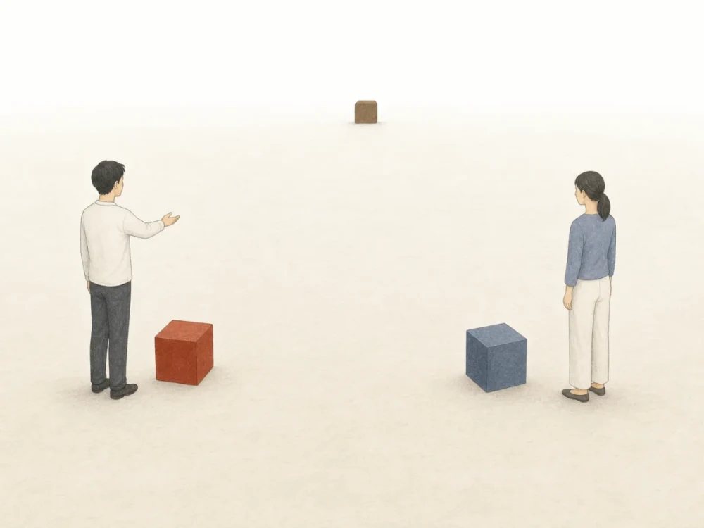
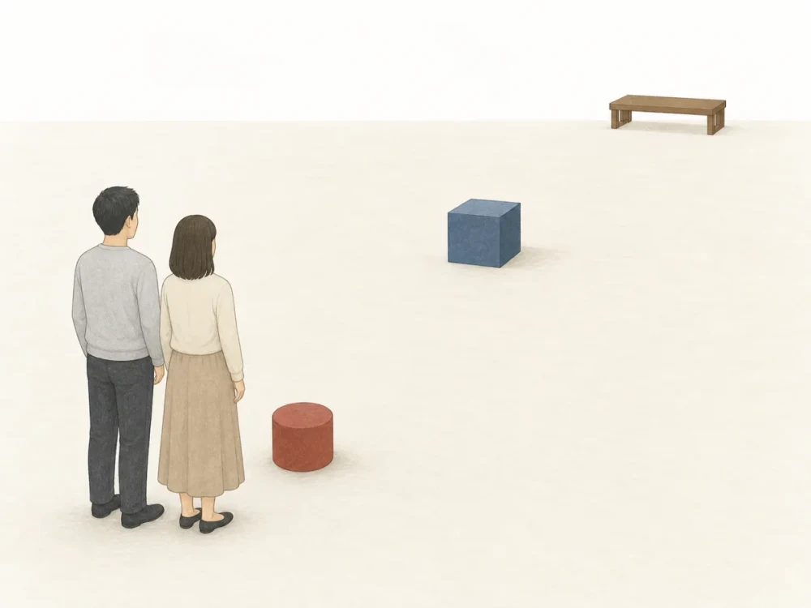

こ・そ・あ・ど怎样构成指示词
「こ・そ・あ・ど」是一套指示关系，并不是单独一种词性。它可以构成代名词、连体词和副词等不同形式。
说话人这一侧
靠近说话人，或表示说话人正在谈论的内容。
听话人那一侧
靠近听话人，或承接对方及前文已经提出的内容。
双方之外
离双方都远，或指双方共同知道、共同回忆的内容。
尚未确定
对未知的事物、地点、方向、状态或种类提出疑问。
| 指示对象 | こ 系 | そ 系 | あ 系 | ど 系 |
|---|---|---|---|---|
| 事物 | これ | それ | あれ | どれ |
| 名词前 | この N | その N | あの N | どの N |
| 场所 | ここ | そこ | あそこ | どこ |
| 方向、所在一方 | こちら | そちら | あちら | どちら |
| 状态、方法 | こう | そう | ああ | どう |
| 种类、样态 | こんな N | そんな N | あんな N | どんな N |
| 程度 | こんなに | そんなに | あんなに | どんなに |
根据说话现场划分距离
指示对象就在说话现场时，使用哪一组形式取决于说话人、听话人与对象之间的位置关系。
说话人和听话人各有自己的范围

说话人 听话人 こ说话人附近 そ听话人附近 あ离双方都远- こ 系：说话人附近。
- そ 系：听话人附近。
- あ 系：离双方都远。
双方从同一个位置观察

双方 こ离双方都近 そ离双方稍远 あ离双方很远- こ 系：离双方都近。
- そ 系：离双方稍远。
- あ 系：离双方很远。
これは私の資料です。
这是我的资料。それはあなたの傘ですか。
那是你的伞吗？あそこに駅があります。
远处那里有车站。上下文中的こ・そ・あ
在会话或文章中，指示词还可以指前文说过的事情，以及双方记得的人、地点或经历。这时判断的重点不是空间距离，而是这项内容由谁提出，以及双方是否都知道。
先看这项信息从哪里来
说话人主动提出某项内容，并准备继续说明或评价。
继续指前文已经说过的内容，或回应对方刚说的话。
B：それは楽しみですね。A：下个月去京都。 B：那真让人期待啊。
双方可以根据共同经历或已有知识，直接认出指的是谁或什么。
こ 系：把内容作为当前话题
「こ」系用于把某项内容作为当前话题，后面还会继续说明、评价或提出结论。因此常见于说明文、报告、发言和较长的叙述。
新しい制度が始まりました。この制度には三つの特徴があります。
新制度开始实施了。这个制度有三个特点。この章では、指示詞の使い方を説明します。
本章说明指示词的用法。理由はこうです。時間が足りません。
理由是这样的：时间不够。そ 系：承接刚说过的内容
「そ」系是上下文中最常见的承接形式。它可以接续自己刚说过的内容，也可以回应对方刚提出的人、事、时间或地点。
先月、札幌へ行きました。そこで雪祭りを見ました。
上个月去了札幌。在那里看了雪祭。A：来月、京都へ行きます。
B：それは楽しみですね。
A：「かさじぞう」という昔話を知っていますか。
B：いいえ、その昔話はどんな話ですか。
あ 系：指双方都知道的人或事
「あ」系表示对象虽然不在眼前，但说话人认为双方都能立刻认出所指内容。它常用于共同经历、熟悉的人物、过去的场所和共有知识。
去年行ったあの店、おいしかったですね。
去年去的那家店，味道很好啊。あの先生は今もお元気でしょうか。
那位老师现在也还好吗？先週見たあの映画、覚えていますか。
你还记得上周看的那部电影吗？为什么有时使用「この」，有时使用「その」
两者都可以指前文出现的内容，但侧重点不同。「この」把它作为当前话题继续展开；「その」只是自然地承接刚才的信息。
駅前で事故がありました。この事故について、現在警察が調べています。
说话人把事故作为接下来要说明的中心，因此使用「この」。駅前で事故がありました。その事故で電車も遅れました。
后句只是在继续说明前句提到的事故，因此使用「その」。把现场指示和上下文指示放在一起看
说话人既可以指眼前的事物，也可以指对方刚说的话或双方共同记得的内容。
Aこれは何ですか。
Bそれは和菓子です。
A来月、京都へ行きます。
Bそれは楽しみですね。
Aあの店、覚えていますか。
Bはい。あそこは静かでしたね。
单独指代与修饰名词
これ・それ・あれ・どれ
本身相当于名词，可以直接接「は・が・を・も」等助词。
この・その・あの・どの ＋ N
必须直接放在名词前，不能脱离名词单独使用。
单独使用与放在名词前
「これ」系列可以独立指代事物；「この」系列必须和后面的名词构成一个整体。
场所、方向与所在一方
ここ・そこ・あそこ・どこ
直接指出地点。
こちら・そちら・あちら・どちら
指方向，也可较礼貌地指地点、人物或所属一方。
こっち・そっち・あっち・どっち
是「こちら」系列较随意的说法。
状态、种类与程度
こう・そう・ああ・どう
作为副词说明动作怎样进行，或指代前文所说的状态和做法。
こんな・そんな・あんな・どんな ＋ N
放在名词前，说明“这种／那种／哪种”性质或样态。
こんなに・そんなに・あんなに・どんなに
放在形容词或动词前，指出程度。
容易混淆的形式
これは辞書です。／この辞書は新しいです。
どれがいいですか。／どの色がいいですか。
お手洗いはどこですか。／受付はどちらですか。
そんな話は知りません。／そんなのは要りません。